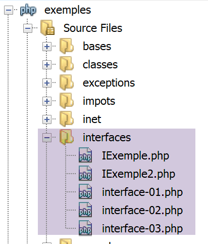

6. Interfaces
Uma interface é uma estrutura que define protótipos de métodos. Uma classe que implementa uma interface deve definir o código para todos os métodos da interface.
6.1. A árvore de scripts

6.2. Uma primeira interface
Definimos uma interface [IExample] num script [IExample.php]. Neste mesmo script, definimos duas classes que implementam a interface [IExample]:
<?php
// strict adherence to function parameter types
declare(strict_types=1);
// namespace
namespace Exemples;
// an interface
interface IExemple {
// interface methods
public function ajouter(int $i, int $j): int;
public function soustraire(int $i, int $j): int;
}
// implementation 1 of the IExemple interface
class Classe1 implements IExemple {
public function ajouter(int $a, int $b): int {
return $a + $b + 10;
}
public function soustraire(int $a, int $b): int {
return $a - $b + 20;
}
}
// implementation 2 of the IExemple interface
class Classe2 implements IExemple {
public function ajouter(int $a, int $b) : int{
return $a + $b + 100;
}
public function soustraire(int $a, int $b) : int {
return $a - $b + 200;
}
}
Comentários
- linhas 10–14: A interface IExample define dois métodos: a função add (linha 12) e a função subtract (linha 13). A interface não define o código para estes métodos. Serão as classes que implementam a interface a fazê-lo;
- linha 17: A classe Class1 implementa a interface IExample. Por conseguinte, define o código para o método add (linha 18) e para o método subtract (linha 22);
- linhas 29–38: o mesmo se aplica à classe Class2;
Utilizamos a interface [IExemple] no seguinte script [interfaces-01.php]:
<?php
require_once "IExemple.php";
use \Exemples\Classe1;
use \Exemples\Classe2;
use \Exemples\IExemple;
// function
function calculer(int $a, int $b, IExemple $interface) : void {
print $interface->ajouter($a, $b)."\n";
print $interface->soustraire($a, $b)."\n";
}
// ------------------- hand
// creation of 2 objects of type Class1 and Class2
$c1 = new Classe1();
$c2 = new Classe2();
// call the calculate function
calculer(4, 3, $c1);
calculer(14, 13, $c2);
Comentários
- linhas 3–6: inclusão e definição das classes e interfaces utilizadas pelo script;
- linha 3: em vez da instrução include, utilizámos aqui a instrução require_once. A instrução include inclui um ficheiro no script atual mesmo que já tenha sido incluído, enquanto a instrução require_once o inclui apenas uma vez. Por isso, quando se trata de incluir código, preferimos a instrução require_once;
- Linhas 9–12: definimos uma função;
- Linha 9: Aqui, declaramos os tipos dos três parâmetros. Se, em tempo de execução, o parâmetro real não for do tipo esperado, é lançado um erro. O terceiro parâmetro é do tipo [IExample]. Isto significa que o parâmetro real deve ser uma instância de uma classe que implemente a interface [IExample]; no nosso exemplo, isto significa uma instância das classes [Class1] ou [Class2];
- Linhas 10–11: Utilizamos os métodos [add, subtract] da interface [IExample];
- linha 19: o terceiro parâmetro real é do tipo [Class1], que é compatível com o tipo [IExample] do terceiro parâmetro formal da função;
- linha 20: o mesmo se aplica à classe [Class2];
Resultados
6.3. Derivação de uma interface
Tal como uma classe filha pode estender uma classe pai, uma interface filha pode estender uma interface pai.
Considere a interface [IExample2] definida no ficheiro [IExample2.php]:
<?php
// strict adherence to function parameter types
declare(strict_types=1);
// namespace
namespace Exemples;
// interface definition IExemple included
require_once __DIR__."/IExemple.php";
// an interface derived from IExemple
interface IExemple2 extends IExemple {
// the interface method
public function multiplier(int $i, int $j): int;
}
// implementation of IExemple2 interface
class Classe3 extends Classe2 implements IExemple2 {
public function multiplier(int $a, int $b): int {
return $a * $b;
}
}
Comentários
- linha 6: a interface [IExample2] estará no mesmo namespace que a interface [Iexample];
- linha 9: o ficheiro de definição da interface [Iexample] é incluído;
- linhas 12–15: definem a interface [IExample2], que estende (herda de) a interface [IExample] e adiciona um novo método a ela (linha 14);
- linhas 18–24: a classe [Class3] estende a classe [Class2]. Uma vez que [Class2] implementa a interface [IExample], [Class3] também a implementará. Na verdade, [Class3] herda todos os métodos públicos e protegidos da classe [Class2], incluindo os métodos add e subtract. Além disso, especificamos que [Class3] implementa a interface [IExample2]. Como tal, deve também implementar o método multiply, o que [Class2] não faz. É isso que as linhas 20–22 fazem;
A interface [IExample2] é utilizada pelo seguinte script [interfaces-02]:
<?php
// strict adherence to function parameter types
declare(strict_types=1);
// inclusion and qualification of classes and interfaces required by the script
require_once __DIR__."/Iexemple2.php";
use \Exemples\IExemple2;
use \Exemples\Classe3;
// function
function calculer(int $a, int $b, IExemple2 $interface) {
print $interface->ajouter($a, $b) . "\n";
print $interface->soustraire($a, $b) . "\n";
print $interface->multiplier($a, $b) . "\n";
}
// ------------------- hand
// creation of 1 Class3 object implementing IExemple2
$c3 = new Classe3();
// call the calculate function
calculer(4, 3, $c3);
Comentários
- linha 12: o terceiro parâmetro da função [calculate] é do tipo [IExample2];
- linhas 13–15: são utilizados os três métodos da interface [IExample2];
- linha 22: a função [calculate] é chamada com um objeto do tipo [IExample2] como terceiro parâmetro (linha 20);
Resultados
6.4. Passar uma interface como parâmetro de função
Vimos na secção anterior que, quando o tipo esperado para um parâmetro de função é uma classe, o parâmetro real pode ser um objeto do tipo esperado ou de um tipo derivado. O mesmo se aplica às interfaces, como mostrado no seguinte script [interfaces-03.php]:
<?php
// strict adherence to function parameter types
declare(strict_types=1);
// inclusion and qualification of classes and interfaces required by the script
require_once __DIR__."/IExemple.php";
use \Exemples\IExemple;
require_once __DIR__."/IExemple2.php";
use \Exemples\Classe3;
// function
function calculer(int $a, int $b, IExemple $interface) {
print $interface->ajouter($a, $b) . "\n";
print $interface->soustraire($a, $b) . "\n";
}
// ------------------- hand
// creation of 1 object of type Class3 which implements IExemple2 and therefore IExemple
$c3 = new Classe3();
// call the calculate function
calculer(4, 3, $c3);
Comentários
- linha 13: a função [calculate] espera um tipo [IExample] como seu terceiro parâmetro. Isto significa que o tipo do parâmetro real pode ser [IExample] ou um tipo derivado;
- linha 20: instanciamos um objeto $c3 do tipo [Class3], uma classe que implementa a interface [IExample2], que por sua vez estende a interface [IExample]. Portanto, em última análise, $c3 implementa a interface [IExample];
- linha 22: chamamos a função [calculate] com um objeto $c3 do tipo [Class3] como terceiro parâmetro. Através da interação entre herança de classes e implementações, vimos que o objeto $c3 implementa o tipo [IExample]. Podemos, portanto, usá-lo como terceiro parâmetro;
Resultados